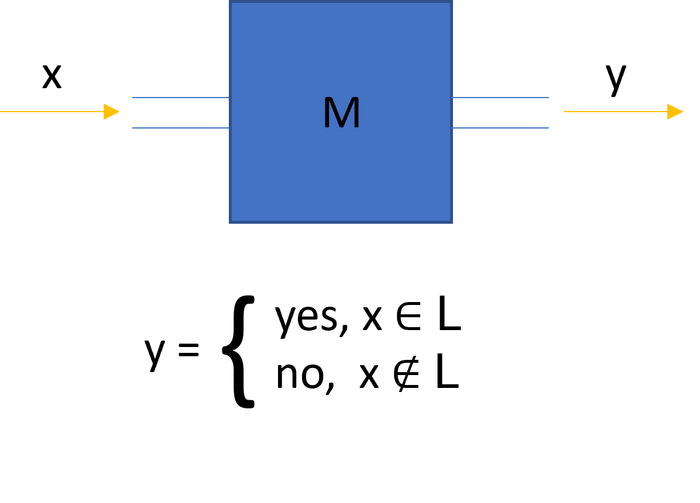
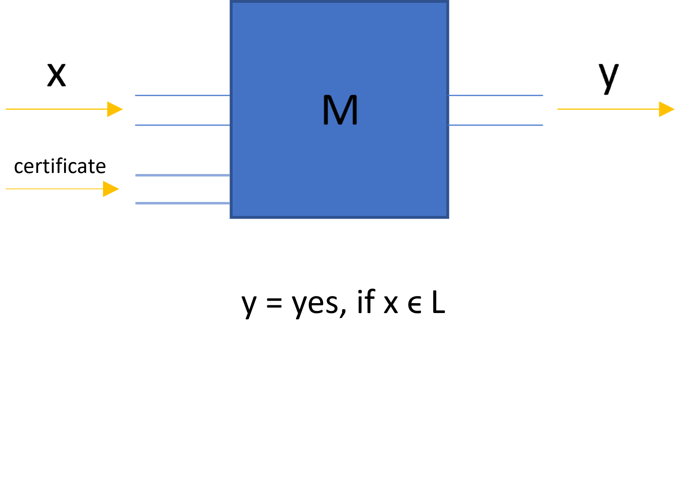
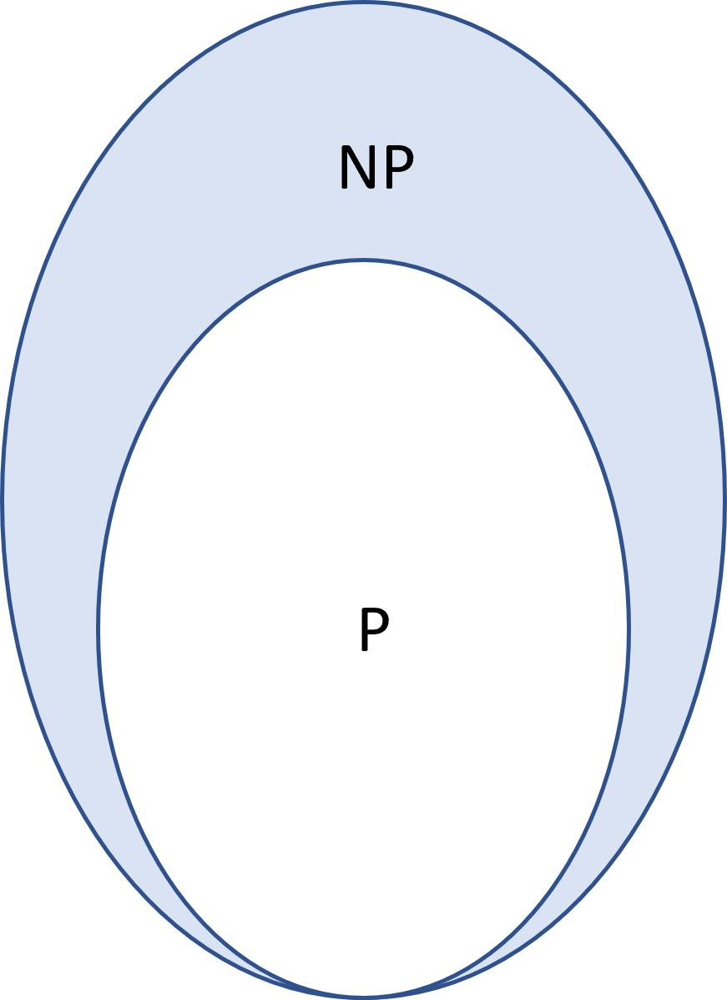

A Not-so-Complex guide to Complexity Theory
January 31st, 2023Asymptotic Notation
In order to be able to quantify the amount of resources an algorithm requires, we must first learn asymptotic notation, which is the standard in computer science to quantify them. Asymptotic notation describes a function in terms of its behavior as the input approaches infinity. For example let’s start by defining one of the most used notations, the Big O notation. Say you have a function f(x) which you are comparing to another function g(x). Now let’s assume that we ignore anything that happens to both functions before some arbitrary point \(x_0\), but after this point, f(x) is always below g(x). See the figure below for an example

If this condition is met, we say that f(x) is Big O of g(x). To be more specific
\[ \exists x_0 \text{ s.t. } \forall x > x_0 \text{, } g(x) > f(x) \Rightarrow f(n) \in O(g(x)) \]This measure sets an upper bound for our function, it is bounded above by g(x). As I mentioned before, the goal of this formalism is to be transferred to a measure of computing resources. The function f(x) represents the amount of resources needed by our algorithm after taking x bits as input. For example, a common resource that is examined is time[footnote: Other examples of resources to be modeled by f(x) are; memory/space, T-gates, magic states, and queries]. One could replicate the graph from the figure above, where the y-axis represents the number of seconds an algorithm took to finish, and the x-axis the number of bits given to the algorithm as input. Because we always want to minimize the resources used, a higher value in the graph is always considered a worse value. Due to this, the sentence “f(x) cannot be higher than g(x)” is often written as “f(x) cannot be worse than g(x)”. In fact, the Big O of a function is usually called the “worst-case complexity”.
Similarly, there is another notation used called Big Omega which is the opposite of Big O. A function f(x) is said to be Big Omega of g(x) if after some point \(x_0\) it is always above g(x)
\[ \exists x_0 \text{ s.t. } \forall x > x_0 \text{, } g(x) < f(x) \Rightarrow f(n) \in \Omega(g(x)) \]This g(x) is then considered the best-case complexity of f(x). Now you can quantify resources like a real theoretical computer scientist!
Classical Complexity Theory
To go deeper into complexity theory, we must go over a little bit of set theory. More specifically, languages. Buckle up. A language is a set of words built from a defined alphabet. In computer science we usually choose our alphabet to be {0,1}. Therefore, a language can be defined as a collection of bitstrings. For example; one could define a language L as a language where every string must end with a 0
\[L = \{0, 00, 000, …, 10, 100, 1000, …, 110, 1100, …\}\]So we have languages, and the elements that make up that language, are words. Imagine we now build an algorithm M that when you give it a bitstring, it outputs “yes”, if the input is a word that belongs in L, and outputs “no” if the input is a word that does not belong in L. Then we say that our algorithm M “decides” the language L. [1]
Now we can build some sort of zoo[2] of languages where we separate them depending on the different resources needed. For example, “P” is defined as the class of languages that require a polynomial amount of time to be decided. In other words, their Big O corresponds to a g(x) which is a polynomial[footnote: if you ever see someone say that a problem can be solved “efficiently” they mean in polynomial time.] Similarly, the class “EXP” is defined as all languages that can be decided in an exponential amount of time. Now let’s take a moment to think about the relationship between these two classes. If there is a language L which is shown to be in P, then by definition there exists an algorithm M that decides L in polynomial time. We can then build a new algorithm M’ such that: receive input x, send it into M as a subroutine, and then stall an exponential amount of time [3]. Finally, output whatever came out of M. This proves that any language that is in P, is also in EXP. Proofs that do not depend on any constraints of the language represent properties of the entire class because it works for all languages in the class. In this case, we proved that the class P is contained inside EXP! This is the heart of complexity theory. Welcome to the complexity zoo, where we define creatures and try to find relationships with other ones in the zoo.
P vs. NP (+ an example of a language!)
Although not the main topic I want to discuss in this post, one cannot introduce complexity theory without mentioning the famous millennial problem of P vs. NP. We already defined P above, so now let me tell you what NP is. At a high level, a language L belongs in NP if we can verify a word “x” belongs in L in polynomial time with help from another bitstring “c”, called the certificate. We are guaranteed to be able to recognize words in the language through the existence of an accompanying certificate. Pay attention to the slight differences with the class P. The first one is that the algorithm is given an extra piece of information asides from the word, a certificate. The second one, maybe a bit more subtle, is that the case where the word does not belong in L is not specified. This means that given a word that does not belong in the language, our algorithm could run forever and it would still be considered to be in NP. If it helps, at a high-level NP is usually described as "languages that can be verified efficiently".
So far this post has been very abstract, so let’s come down from our theory cloud a little bit and talk about an example, satisfiability problems (also called SAT). Imagine there are n boolean variables x_1, x_2, …, x_n, and we now make groups out of them, relating them with the \(\lor\) (OR) operator [3], for example:
\[x_1 \lor x_3 \] \[x_2 \lor ¬x_1 \lor x_4\]Each one of these groups is called a “clause”. If there exists an assignment for each variable, such that every clause evaluates to 1, then we say the problem is satisfiable. The example above is satisfiable, take the instance x_1 = 1, x_2 = 1, x_3 = 0, x_4 = 0.
\[1 \lor 0 = 1\] \[1 \lor 0 \lor 0 = 1\]How do we describe this problem in terms of everything we have learned so far? Well, problems can be described as languages. In this case, the language is SAT, and the words in SAT correspond to instances that are satisfiable. If we continue to use the example above, \(x_1 \lor x_3 \) and \(x_2 \lor ¬x_1 \lor x_4\) is defined as a word, and because we know that it is satisfiable (there is a solution), then we say this word belongs in SAT.
At the time of writing this post, there is no known efficient algorithm to recognize if a SAT instance is satisfiable. If we consider a brute force algorithm where we just try every possible assignment of the n variables and compute the clauses, that corresponds to at least \(2^n\) attempts, which is exponential! Finally, let’s see why SAT is in NP. If I give you a word that belongs in SAT, that is, a SAT problem that does have a solution, you would have to (in the worst case scenario) try every possible assignment to find the solution and confirm that it is in SAT. But, if I also gave you the satisfying assignment, you could plug in the solution and verify that it works. In the case of the SAT, the “certificate” is the solution to the SAT problem, thus with these two inputs, one can identify words in SAT efficiently. This is the definition of NP, so we can conclude that SAT belongs in NP.
The Millenium Prize problem of P vs. NP consists of proving that P = NP or P != NP. The set P is contained in NP, which means all problems that can be solved efficiently, can also be verified efficiently. Let’s consider these two scenarios separately.
P != NP would mean that NP is strictly bigger than P. This can be shown by proving that one single problem cannot be solved efficiently, but given a certificate, it can be verified efficiently. This problem would then live in the shaded region shown below
P = NP would mean that every problem that can be verified efficiently, can also be solved polynomially. Which implies the shaded region above is non-existent. This would have dramatic consequences, and our world would be quite different. For example, not only would you be able to claim one million dollars for solving the P vs. NP problem, but an extra 5 million dollars because then you could solve all the other ones in polynomial time! Because of this, even though no one has solved the P vs. NP problem, they are assumed not to be equal. It is common to state as a conjecture that P != NP. If you are interested in learning more about this conjecture, I encourage you to read this paper
[1] The word algorithm is very vague in terms of mathematics. If you were to read any of the concepts related to this post in a more formal context, such as a textbook, they will use “Turing Machine” instead of "algorithm". In order to avoid extending this post further by explaining what a Turing Machine is, I decided to omit this. The ideas presented in this post will remain correct if the reader has a basic understanding of what an algorithm is. If you want to be really careful about these definitions, I recommend you learn what a Turing machine is, and replace every instance of “algorithm” with it!
[2] This is a reference to the complexity zoo. A website created by S. Aaronson meant to keep track of all the complexity classes described in the literature
[3] If stalling is too hand-wavy for you, you can imagine putting a for loop after using subroutine M, where the range of the loop is exponential in x. The body of the loop can be your favorite arithmetic operation or anything else that does not affect the output
[4] This operator returns 1 if at least one of the variables is 1, read this for more details